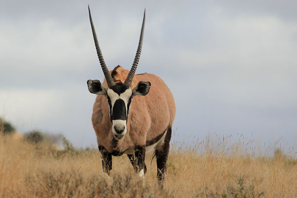

GEMSBOK
The gemsbok or gemsbuck (Oryx gazella) is a large antelope in the Oryx genus. It is native to the arid regions of Southern Africa, such as the Kalahari Desert. Some authorities formerly included the East African oryx as a subspecies.
The gemsbok is depicted on the coat of arms of Namibia, where the current population of the species is estimated at 373,000 individuals.
Giraffes are preyed on by lions; their calves are also targeted by leopards, spotted hyenas, and African wild dogs. Adult giraffes do not have strong social bonds, though they do gather in loose aggregations if they happen to be moving in the same general direction. Males establish social hierarchies through "necking", which are combat bouts where the neck is used as a weapon. Dominant males gain mating access to females, which bear the sole responsibility for raising the young.
WHERE WILL YOU FIND THEM?
You will find the gemsboks just beyond panda canyon.